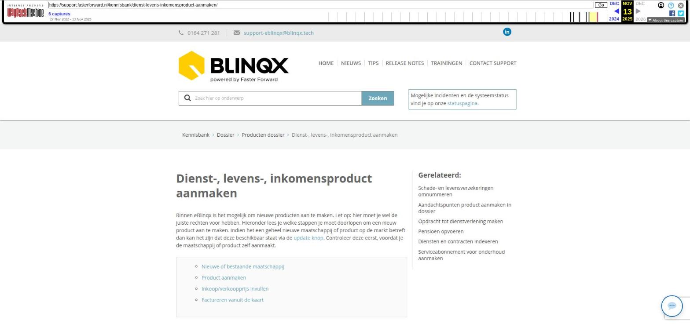

Dienst-, levens-, inkomensproduct aanmaken

Tekstinhoud
Dienst-, levens-, inkomensproduct aanmaken
Binnen eBlinqx is het mogelijk om nieuwe producten aan te maken. Let op: hier moet je wel de juiste rechten voor hebben. Hieronder lees je welke stappen je moet doorlopen om een nieuw product aan te maken. Indien het een geheel nieuwe maatschappij of product op de markt betreft dan kan het zijn dat deze beschikbaar staat via de update knop. Controleer deze eerst, voordat je de maatschappij of product zelf aanmaakt.
Nieuwe of bestaande maatschappij
Product aanmaken
Inkoop/verkoopprijs invullen
Factureren vanuit de kaart
Nieuwe of bestaande maatschappij
Voordat je het nieuw product aan gaat maken dienen er een aantal basis voorwaarden aanwezig te zijn. Allereerst dient het product onder een maatschappij komen te staan. Ga naar beheer – organisatie & personen en zoek op de maatschappij.
Is de maatschappij deze reeds aangemaakt en als maatschappij ingericht? Dan kan je hieronder naar de volgende stap gaan. Indien de maatschappij nog niet in je eBlinqxomgeving bestaat en je wilt deze toevoegen, lees dan deze pagina.
Product aanmaken
Hieronder lees je het stappenplan hoe je een nieuw product kunt aanmaken.
Ga hiervoor naar de module "Producten", kies vervolgens voor "Productbeheer".
Zoek in het tabblad 'Leverancier' de organisatie waarvoor je het product wilt aanmaken en klik hierop.
Je komt vervolgens in het scherm "Product". Hier vind je alle bestaande producten die gekoppeld zijn aan de maatschappij. Klik hier op het 'plus-teken' linksboven om een nieuw product aan te maken.
Het veld leverancier is al gevuld met de hier voor geselecteerde organisatie. Kies daaronder bij type product voor het type wat je wilt aanmaken (bijvoorbeeld dienst, inkomensverzekering, levensverzekering, vermogen en bancair, pensioen) en geef het product een naam. Dit in het veld 'Naam'.
Nu zal het scherm automatisch een aantal velden laten zien die gevuld moeten worden. Hier kies je een categorie en indien van toepassing een dekkingstype. Het veld HDN codeproductmijtype hoeft niet gevuld te worden
Indien de categorie die je zoekt er niet tussen staat is het mogelijk om een nieuwe categorie toe te voegen. Lees hier hoe je een nieuwe categorie aanmaakt.
Inkoop/verkoopprijs invullen
Bij een dienst kan het gewenst zijn om de inkoop/verkoopprijs in te vullen, zodat deze automatisch in de productkaart worden gezet bij het aanmaken van de dienst. Dit kan gevuld worden onder het tabblad Inkoop/verkoop wat zichtbaar wordt als je het product hebt opgeslagen. Middels het plusicoon voor 'verkoopprijs' kan je deze toevoegen.
Factureren vanuit de kaart
In eBlinqx is het mogelijk om diensten, contracten en abonnementen direct te factureren vanuit de kaart. Indien je gebruik maakt van factureren vanuit de kaart en je wilt het aangemaakte contract of dienst hiervoor gebruiken dan moet onder het tabblad inkoop/verkoop 'Factureren vanuit de kaart' aangevinkt worden.
Laatste update: 15 oktober 2025
Was deze informatie nuttig?
Ja Nee